Secrets Of Building
High-Performance
Web Based Apps
Yuriy Luchaninov Mobidev.biz
Why customers choose Web Apps ?
- it takes less money for development
- it takes less money for changing
- sometimes it's the only way to implement the necessary functionality
Only three reasons
THERE'S ALWAYS A "BUT"
JS platforms don't have enough performance!
BUT IT'S JUST AN OPINION
What is Performance?

"Fast is good, faster is better" - every bit of pref research
In Real Life
Is 50ms "Too Slow"?
Real Life
| Delay | User reaction |
|---|---|
| 0-100ms | Instant |
| 100-300ms | Slight perceptible delay |
| 300-1,000ms | Task focus, perceptible delay |
| +1,000ms | Mental context switch |
| +10,000ms | I'll come back later... maybe |
Four phases of interaction

Real Performance Criteria
| Response | Animation | Idle | Load |
|---|---|---|---|
| Tap to paint in less than 100 ms | Each frame completes in less than 16ms | Use idle time to proactively schedule work | Satisfy the Response goals during load |
| Drag to paint in less than 16ms | Complete that work in 50ms chunks | Get first meaningful paint in 1,000ms |
RAIL puts the User
in the center
Response
100ms
The User feels an instantaneous response.
Any longer and the connection between action and reaction is broken.
Tip 1: Use "fastclick" library
300MS
Tip 2: Use unblocking interaction patterns
onListItemClick() {
// set timeout
let spinnerTimeout = setTimeout(showSpiner, 100);
// start loading the data
loadDetailsData().then((data) => {
clearTimeout(spinnerTimeout);
hideSpinner();
// start showbiz to transition to details
transitionToDetailsView(data);
});
}
Tip 3: Check your "tap" areas
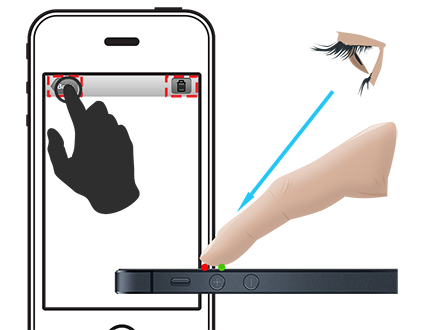

Measuring
sideNavToggleButton.addEventListener('click', ()=> {
console.time('sideNavToggleResponse');
this.toggleSideNav();
// wait until the frame
requestAnimationFrame(_ => {
console.timeEnd('sideNavToggleResponse');
});
});
Checklist
- Use "fastclick" library
- Use unblocking interaction patterns
- Check your "tap" areas
Animation
16ms
Visual changes feel smooth and consistent.
Any variation in frame rate will be disconcerting to the user.
But: in real life
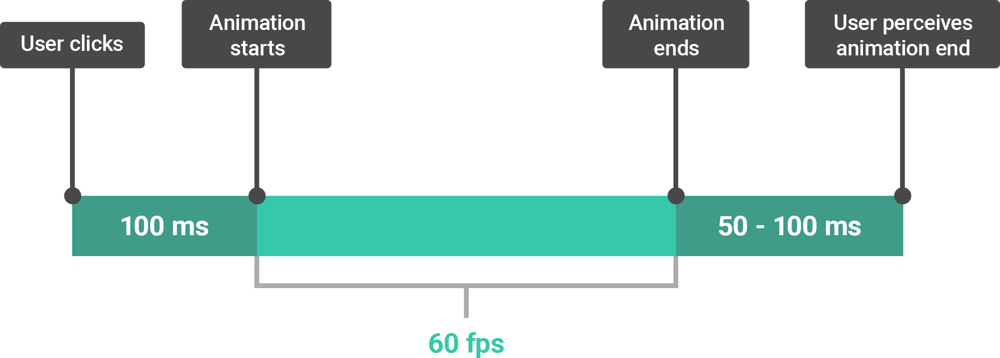
Tip 1: Use FLIP
- First: the initial state of the element(s) involved in the transition.
- Last: the final state of the element(s)
- Invert: here’s the fun bit. You figure out from the first and last how the element has changed, so – say – its width, height, opacity. Next you apply transforms and opacity changes to reverse, or invert, them.
- Play: switch on transitions for any of the properties you changed, and then remove the inversion changes.
Tip 2: Use CSS animation
- transform: translateZ(0);
- transform: translate3d(0,0,0);
- In CPU we operate objects, in GPU - textures
- Transition CPU - always separate repaint
- Transition CPU - GPU takes time
- Memory consumption grows
- One can accidentally transfer unnecessary elements to GPU
- *{transform: translateZ(0);} - BAD!
Measuring
Checklist
- Use FLIP approach
- Use CSS animations
Idle
50ms
Allows for responding to user interaction.
Any longer and we may not be responsive.
Tip 1: Divide your operations into 50ms chunks
window.requestIdleCallback =
window.requestIdleCallback ||
function (cb) {
var start = Date.now();
return setTimeout(function () {
cb({
didTimeout: false,
timeRemaining: function () {
return Math.max(0, 50 - (Date.now() - start));
}
});
}, 1);
};
function handleTasks(deadline) {
while (deadline.timeRemaining() > MIN_TASK_TIME && tasks.length) {
processTask(tasks.pop());
}
if (tasks.length) {
requestIdleCallback(handleTasks);
}
}
requestIdleCallback(handleTasks);
Tip 2: Use Web Workers for background operations
// Watch for messages from the worker
worker.onmessage = function (e) {
// The message from the client:
console.log(e.data);
};
worker.postMessage('start');
onmessage = function(e){
if ( e.data === 'start' ) {
// Do some computation
done()
}
};
function done(){
// Send back the results to the parent page
postMessage('done');
}
Measuring
Checklist
- Divide your operations into 50ms chunks
- Use Web Workers for background operations
Load
1sec
The User's flow of thought is seamless.
Beyond it, the user loses focus and attention.
Tip 1: Prepare your data mockups
<script>
window.dataMockups = {
"_id": "570ce1ffa7a72b00d7b1c916",
"balance": "$1,510.99",
"picture": "http://placehold.it/32x32",
"age": 22,
"eyeColor": "brown",
"name": "Page Workman",
"gender": "male",
"email": "pageworkman@matrixity.com",
"phone": "+1 (831) 424-2078",
"address": "481 Bradford Street, Newcastle, Maryland, 855",
...
};
</script>
Tip 2: Use service workers
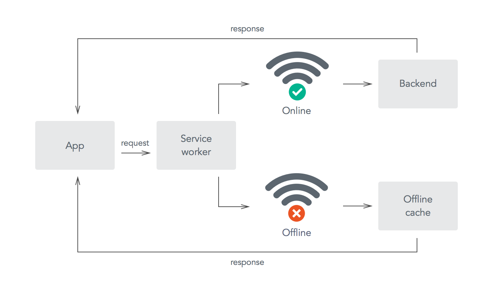
Measuring
Checklist
- Prepare your data mockups
- Use service workers
Common tips
Tip 1: Try to understand composing & rendering of layers
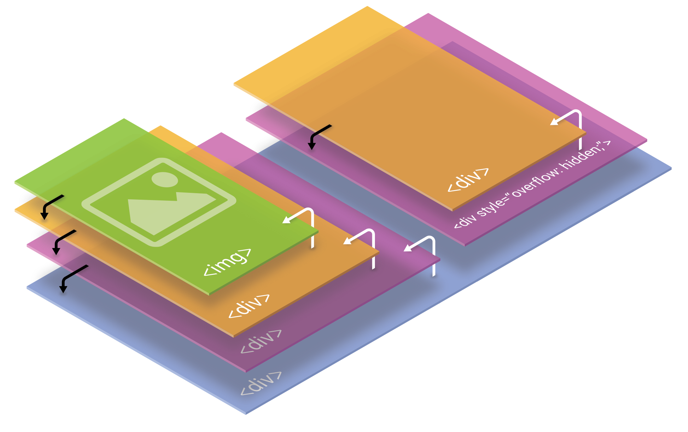
Tip 2: DOM structure is important
- 3 elements = 0.003ms
- 1000 elements = 0.03ms
- 10000 elements = 0.36ms
- +JQuery = 2,46ms
Tip 3: Choose modern frameworks
 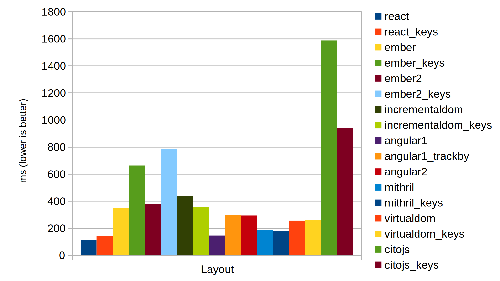
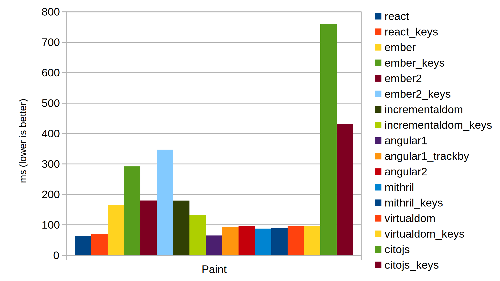
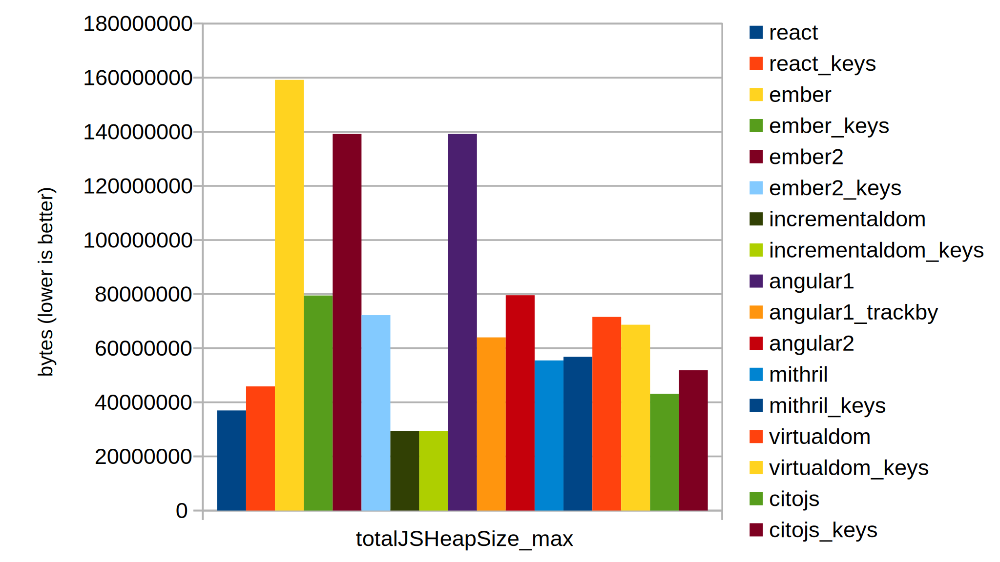
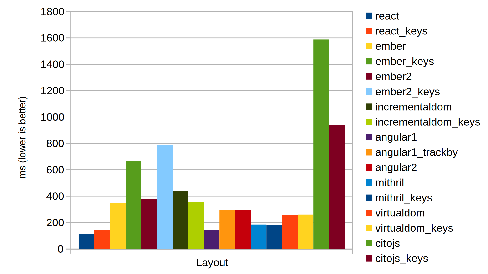
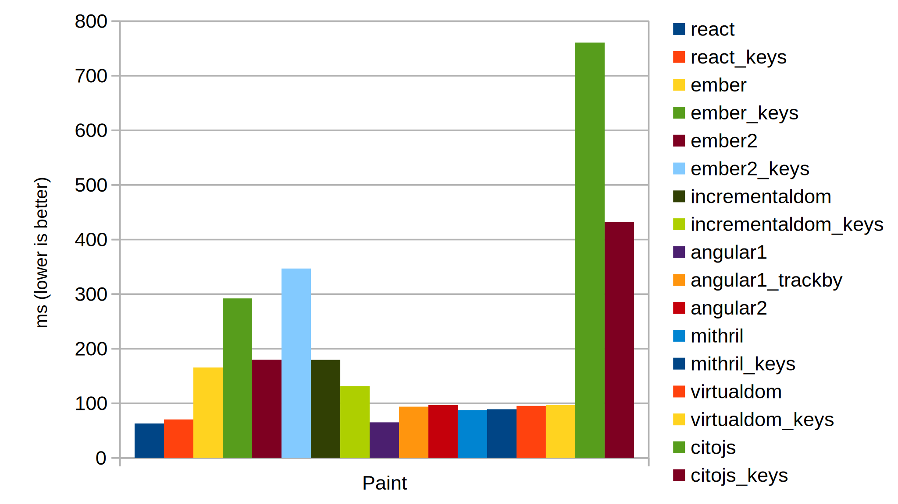
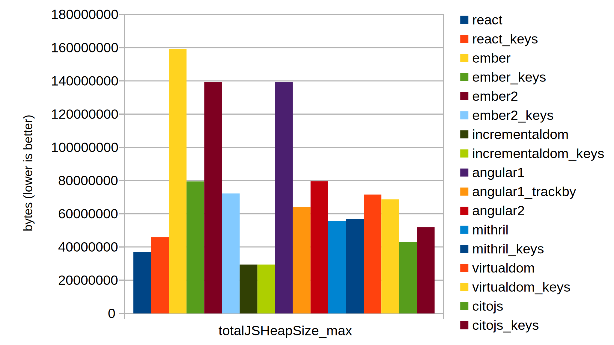
Tip 4: Use flat or material CSS styles
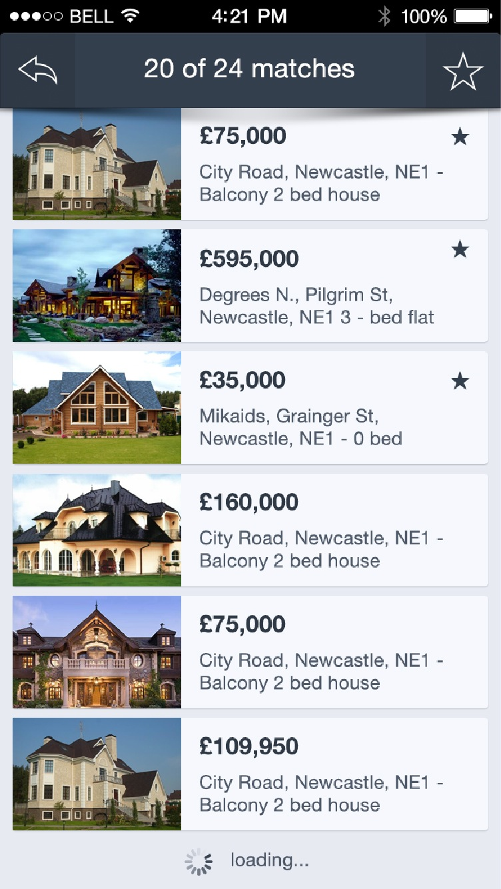
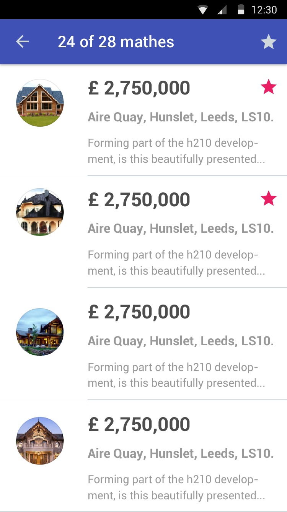
Tip 5: You must prepare images
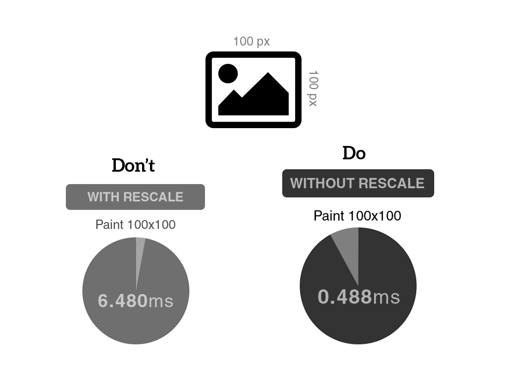
Tip 6: Use correct UI patterns

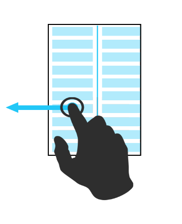
Checklist
- Try to understand composing & rendering of layers
- DOM structure is important
- Choose modern frameworks
- Use flat or material CSS styles
- You must prepare images
- Use correct UI patterns